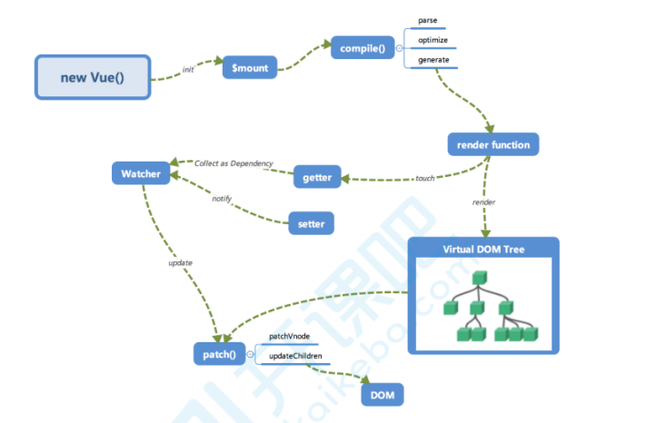
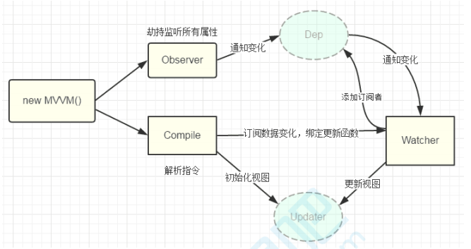
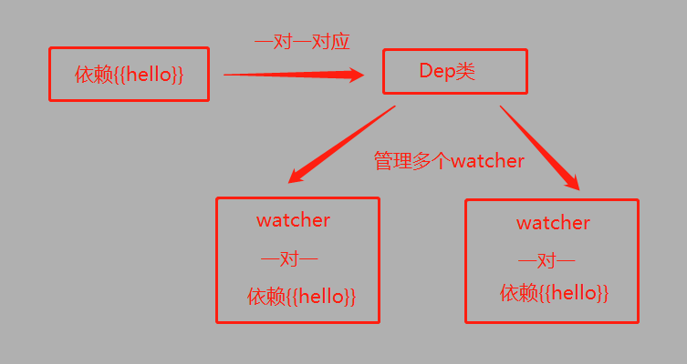

手写一个low碧版Vue
手写一个low碧版Vue
Vue工作机制
1 | 1.new Vue()之后 Vue会调用初始化也就是_init()函数 初始化了生命周期、事件、props、data、computed、与watch等 |

1 | 1.我们上面的图示 是以浏览器为例 是你script src方式引入 Vue.js |
我们实现的简化版Vue流程

Vue的响应式原理
1 | 1.Vue的响应式原理 Object.definProperty |
1 |
|
实现响应式
1 | 1.observe 递归你传进来的options的data 数据 |
1 | //使用的时候 |
递归去响应式
1 | 1.刚刚我们已经写好了一个基本的响应式 |
1 | class Wvue { |
实现无中间访问
1 | 1.我们在使用Vue的时候 平时 都只直接 this.msg 中间是没有data的 |
1 | //使用的时候 |
依赖收集与追踪
1 | new Vue({ |
1 | 1.上面可以看到 我们的template里的 双花括号里面的name1 是依赖我们data 里的name1 这个时候 就说明我们现在有依赖关系 |
实现数据依赖与追踪
1 | 1. 我们每个依赖 都对应一个watcher(也就是我们上面所说的观察者) |
Dep类的作用
1 | 1.我们创建了一个Dep的类 用来收集Watcher对象 读数据的时候 会触发getter函数 把当前的watcher对象存放在Dep类中去 |
1 | //Dep:管理若干个watcher实例 它和key 是一对一的关系 |
Watcher类的作用
1 | 1.用于观察依赖 每个依赖会对应一个watcher |
1 | //保存UI中的依赖 和自己一一对应 当dep通知我更新的时候 我去更新 |

实现
1 | class Wvue { |
编译 compile
1 | 1.以上 是我们 手动实现的 收集依赖 添加watcher |
compile 的核心任务(简易版)
1 | 1.获取并且遍历DOM树 |

前置知识 fragment
1 | 1.DOM 的文档篇 可以包含和控制节点 但不会像完整的文档那样占用额外的资源 是一种轻量级的文档 |
1 | HTML 中 有如下代码 |
1 |
|
逻辑
1 | //遍历模板 将里面的插值表达式解析 (双{{}}) |
this.node2Fragment方法
1 | 1.将我们所有的el中的第一个元素 搬家到 我们创建的 fragment |
1 | node2Fragment(el){ |
this.compile方法
1 | 1.遍历我们的移动好的fragment文档碎片 |
1 | compile(el){ |
this.compile 下的 this.isElement方法
1 | 1.判断你是不是元素 |
1 | //如果是元素节点 就解析 他身上的以w-开头 或者 @开头的指令 |
this.compileElement方法
1 | 1.用来获取元素上的属性 |
1 | compileElement(node){ |
model方法(w-model 双向绑定)
1 | 1.首先 我们的Vue上的值变了 需要更改界面 |
1 | //v-model指令执行的方法 |
html方法
1 | //html方法 |
@开头的事件处理 this.eventHandler 方法
1 | 1.首先要不按你的@后面的事件名称拿出来 |
1 | //处理@开头的指令相关 |
this.compile 下的 this.isInterpolation方法
1 | 1.解析{{}}文本 |
1 | //解析文本节点 看看有每有{{xxx}}的然后 把值替换成我们Wvue里的变量 创建watcher |
compileText方法
1 | 1.用来取出{{xxxx}} 里面的xxxx 替换成我们Wvue实例里面的变量的值 |
1 | compileText(node){ |
通用函数
1 | 1.上面我们那已经实现了 把{{xxx}}解析出来 把xxx里面的值替换成我们的Wvue里面的data里面值 |
1 | compileText(node){ |
创建watcher
1 | 1.我们创建watcher的时机是在 解析{{}}括号的时候创建的 也就是我们的 |
1 | //保存UI中的依赖 和自己一一对应 当dep通知我更新的时候 我去更新 |

总结
1 | 1.这里我们的compile 做了DOM操作 其实真正的Vue compile就是编辑成render函数 没有DOM的草走 |


公告
感谢访问本站，如喜欢请收藏。本站主要分享前端知识，立志成为资深前端工程师，但目前是一个前端界的小学生 若喜欢可以打赏请博主喝一杯冰阔落
另外请大家多多支持淼哥的开源项目
https://github.com/flipped-aurora/gin-vue-admin
🌟🌟欢迎大家start 🌟🌟
欢迎加入博主的前端技术交流群